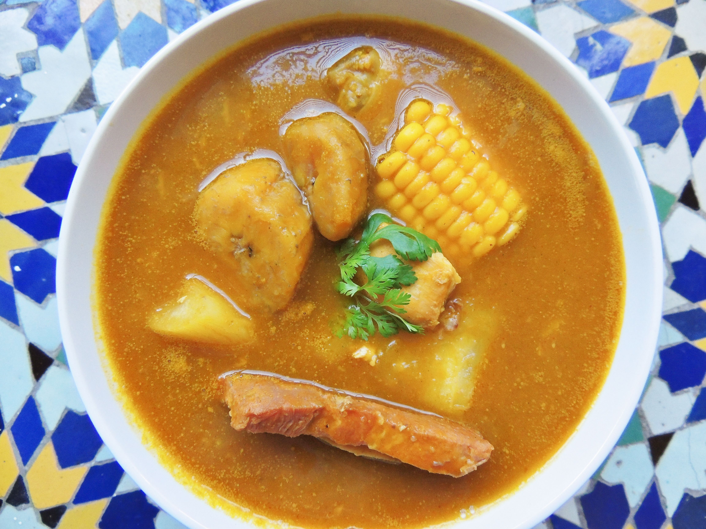
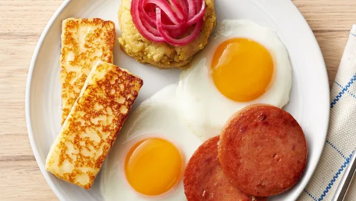

Traditional & Modern
Dominican Republic Recipes
From mangú to sancocho—authentic dishes, step-by-step instructions, and tips from the island.
Recetas destacadas

Pica Pollo

Tres Golpes
Services
Recipe testing, catering menus, and content creation for food brands.